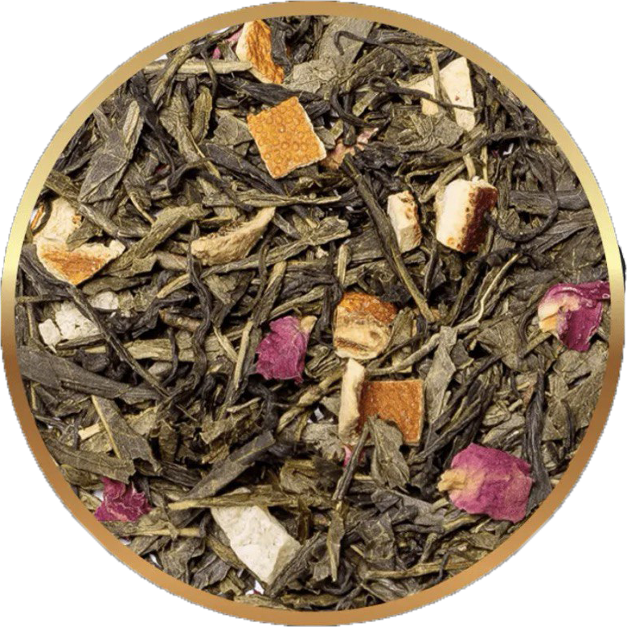

ZIELONA HERBATA
RICHMONT GREEN CHERRY

Szlachetne zestawienie klasycznych odmian Sencha i Bancha. Daje
delikatny złocistozielony napar o zapachu aromatycznej wiśni,
orzeźwiającej pomarańczy i słodkiego ananasa. Tworzy to niezrównany
bukiet, który dopełnia subtelna nuta płatków róży. Idealnie komponuje
się z lekkimi daniami kuchni orientalnej.
Skład: Zielona herbata (92%), skórka pomarańczy, ananas, wiśnia
morello (2%), płatki róży.